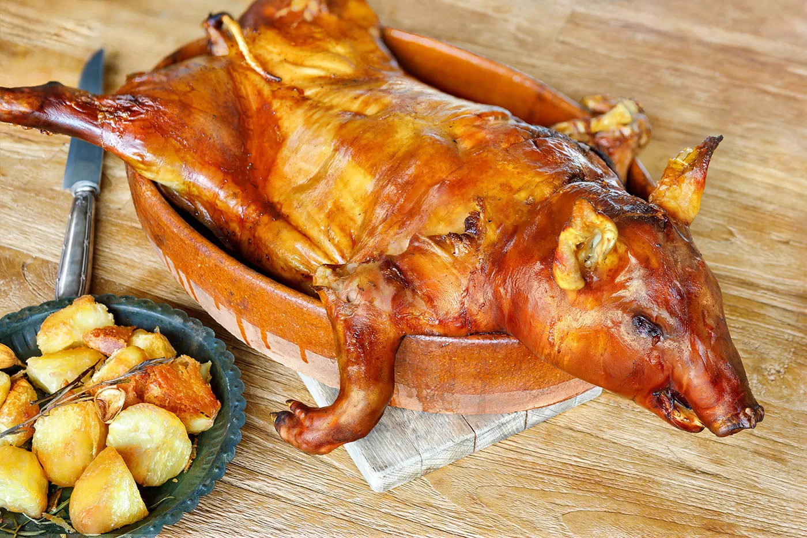

[ HOME ]
Whole Suckling Pig

Ingredients:
- 5-6kg Whole suckling pig, gutted and clean
- Sea salt
- Lard
- Extra virgin olive oil
- Water
Steps:
- Pre-heat your oven to 180°C/350°F/Gas Mark 4 for 30 minutes prior.
- Firstly, you need to butterfly open the suckling pig to ensure the cooking process is even on all sides. Lay the suckling pig on its back and with the help of a cleaver, cut inbetween its spine, right through the middle to open both sides up. You start from the middle of the loin, right up to its head. You start by cutting in with the cleaver and then hitting it hard to split the spine. If you don’t feel comfortable doing this, ask your local butcher to do it for you.
- To cook the suckling pig, you will need a large rectangle roasting tin in which the piglet can fit. You will also need 2 or 3 clean wooden slats that fit in the tin and where the piglet can rest so it is not in direct contact with the tin or cooking water. Season the piglet with fine sea salt and place it skin side down on the roasting tin. Pour about an inch of water onto the bottom of the tin, making sure the water does not overflow over the wooden slats. Roast for 90 minutes.
- Take the piglet out of the oven, turn the piglet skin side up, remove the cooking juices from the roasting tin and add some fresh water, again about an inch. Prick the skin of the piglet with a fork in various places to avoid bubbles appearing under the skin whilst cooking. Brush the piglet with a mixture of lard and olive oil and return to the oven for a further 90 minutes. Increase the oven temperature to 200°C/400°F/Gas Mark 6 for the last 30 minutes of cooking.
- Remove the suckling pig from the oven and take it out of the roasting tin onto a serving platter. Drain, with the help of a ladle or large spoon, the excess of oil from the cooking juices and fine strain them. Check if the juices have the right seasoning, if not, add some more salt and serve with the roasted suckling pig. The skin should be incredibly crispy and the meat very soft that’s why you should be able to carve the suckling pig with a plate cutting through it…that’s the tradition!